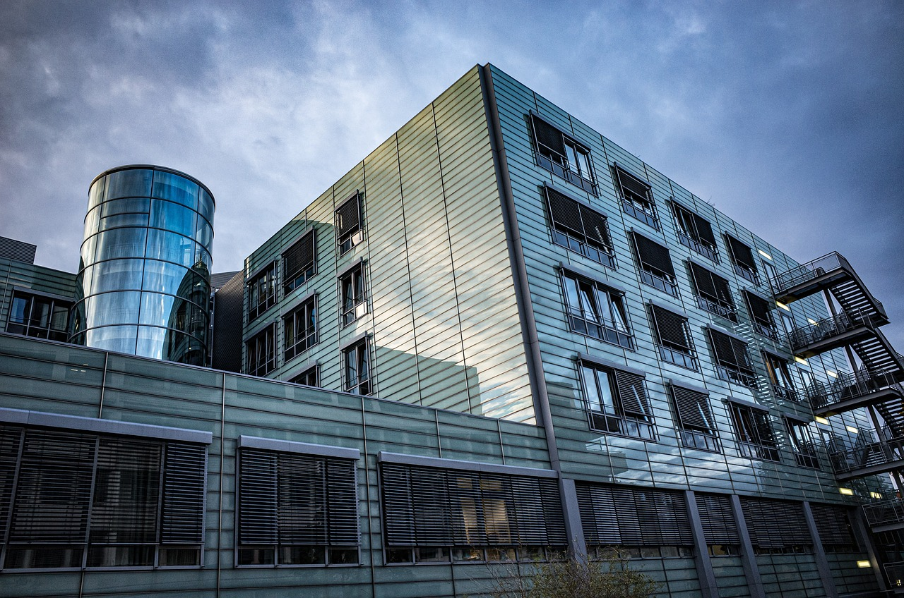

Sistema Único de Saúde (SUS)
Sistema Único de Saúde (SUS)
A hemodiálise é o principal tratamento clínico de terapia renal substitutiva para pacientes com Doença Renal Crônica em último estágio e pode garantir sobrevida às pessoas. No Brasil, cerca de 144 mil pacientes fazem esse tipo de tratamento, sendo 85 mil atendidos no Sistema Único de Saúde (SUS).
Apesar do alto número de pacientes, apenas 7% dos municípios brasileiros têm clínicas de diálise. Em 2021, o Brasil realizou 4.800 transplantes de rim, representando 70% do total de transplantes de órgãos feitos no país. Para aprimorar a assistência, o Ministério da Saúde reajustou em 103% o valor da hemodiálise convencional na tabela do SUS, com um investimento total previsto para 2023 de R$ 600 milhões.
